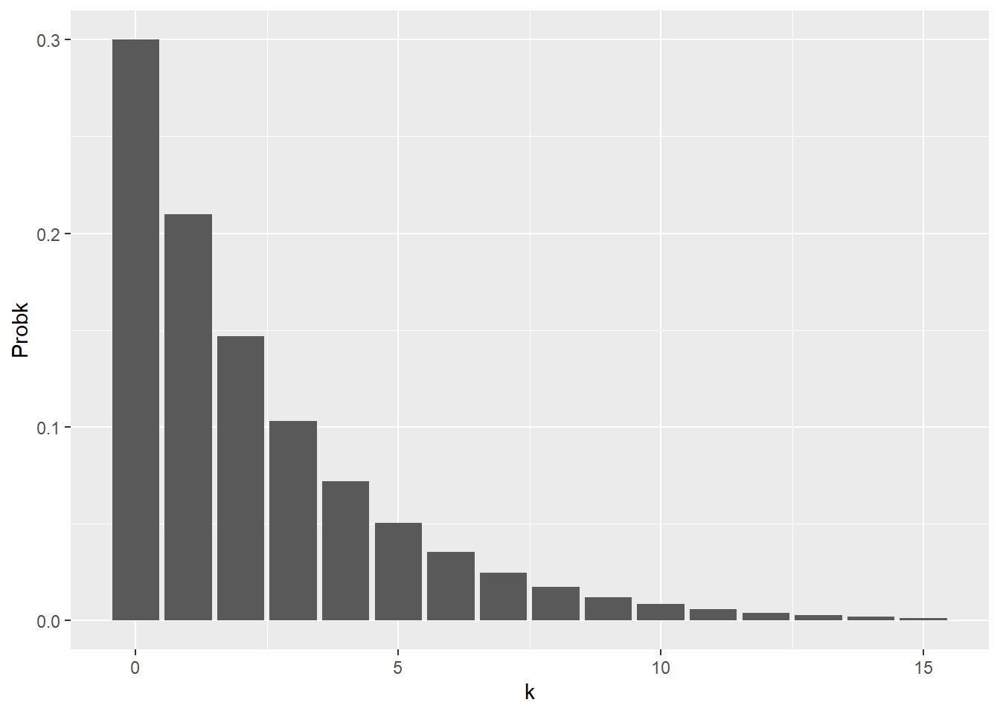
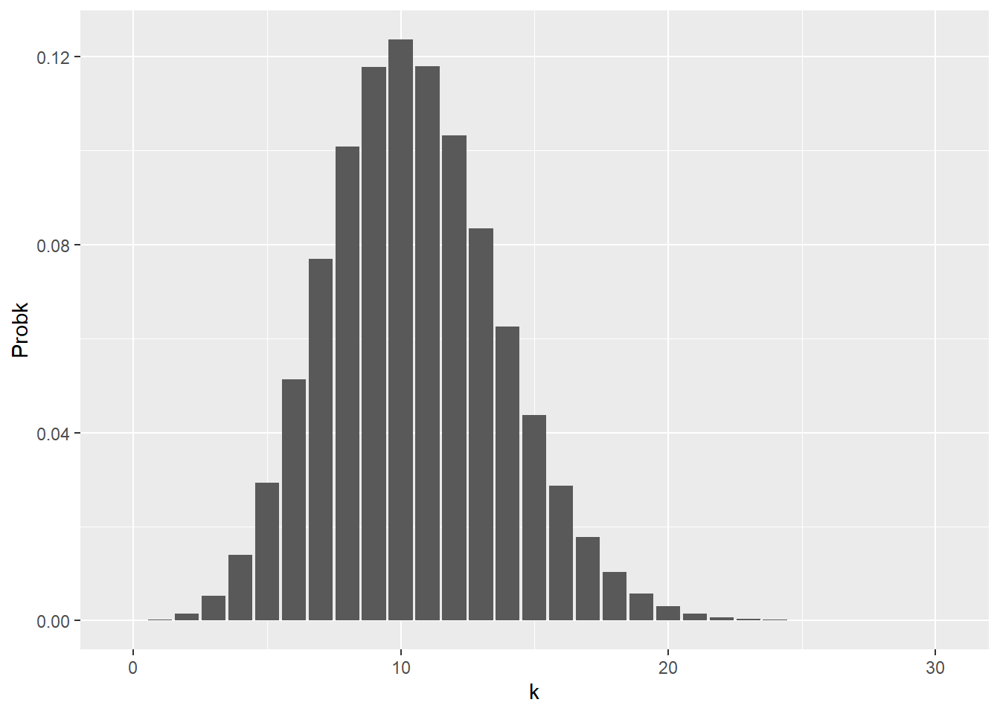
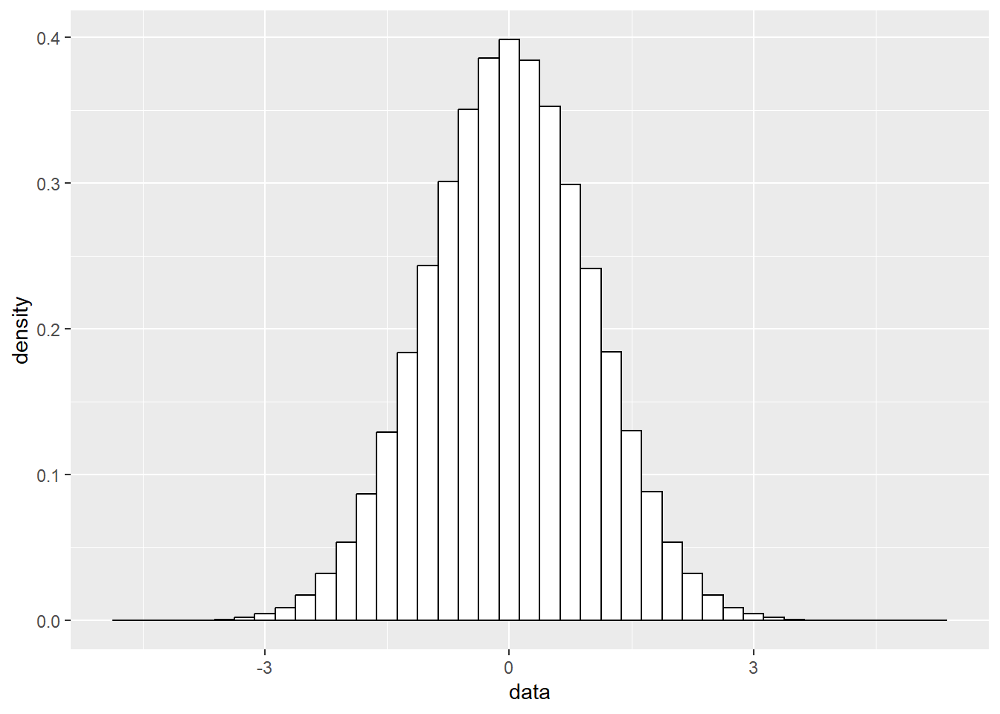
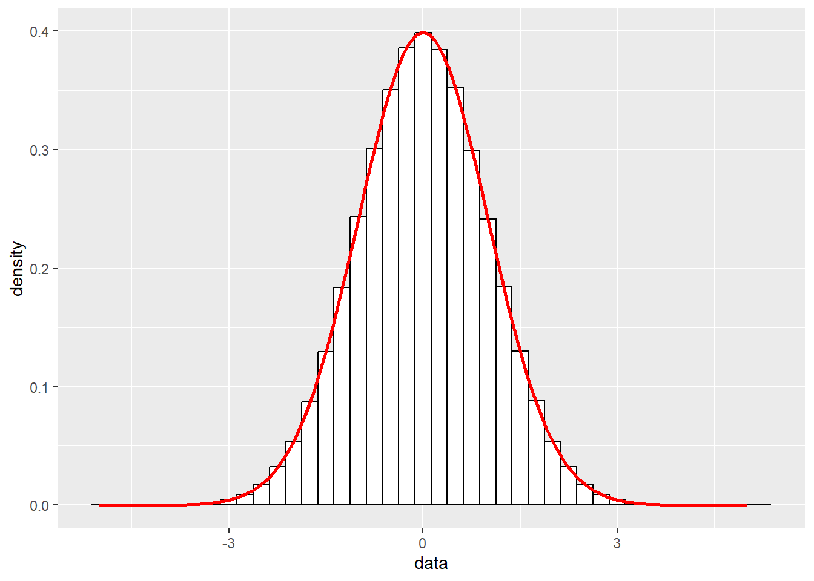
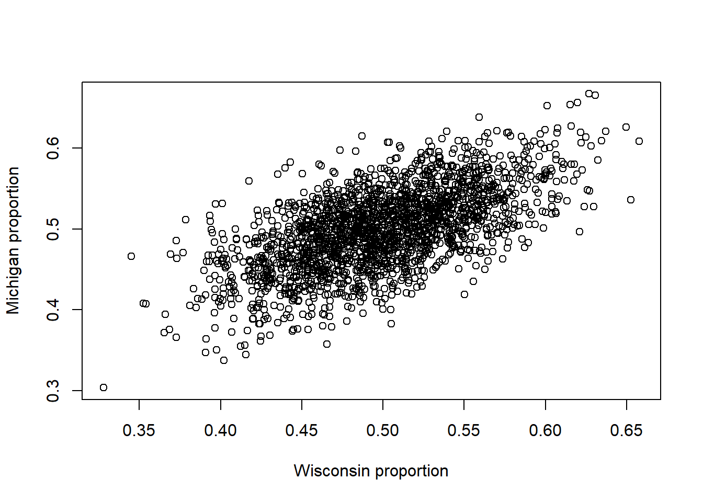
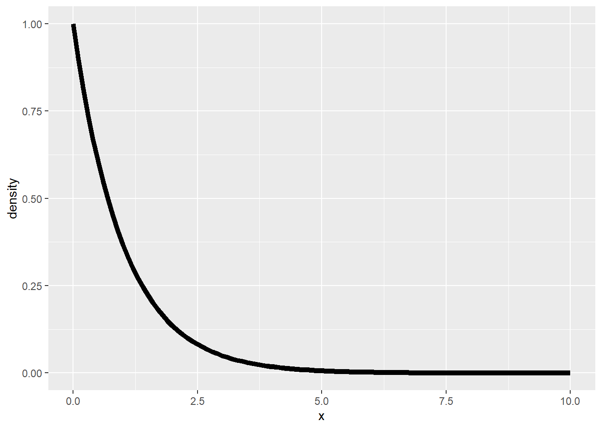
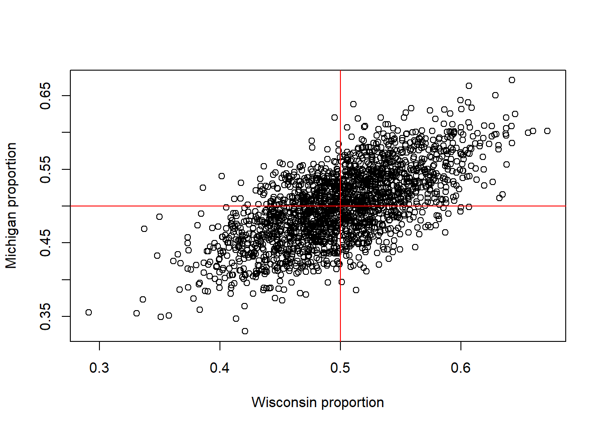

rbinom(1, size=10, prob=0.3) [1] 3We use random variables to model how our data came to be.
There are a number of very important families of random variables that are useful for modeling different types of random populations and this week we will focus on these different random variables and their properties.
After this lesson, you will be able to
Let’s look at some commonly-used random variables and real-world phenomena to which they are well-suited.
A Bernoulli random variable has outcome set \(\Omega = \{0,1\}\).
To specify a probability on this set it is enough for us to specify \(\Pr[ \{0 \} ]\) and \(\Pr[ \{1\} ]\).
Typically, we do this by specifying the success probability \(p = \Pr[ \{1\} ] \in [0,1]\). Once we have done this, it is immediate that (check!) \(\Pr[ \{0\} ] = 1-p\).
Note that we can check that this gives us a probability by verifying that it sums to 1: \[\Pr[ \Omega ] = \Pr[ \{0\} \cup \{1\} ] = \Pr[ \{0\} ] + \Pr[ \{1\} ] = 1-p + p = 1.\]
If \(X\sim Bern(p)\) it is not hard to prove that \(E(X)=p\)
The variance is \(Var(X) = E(X^2)-E^2(X) = (1-p)0^2 + p\cdot 1^2 - p^2 = p-p^2=p(1-p)\)
Bernoulli random variables are commonly used to model “yes or no” events. That is, events of the form “whether or not event \(A\) happens”. Common examples:
If \(X\) is a Bernoulli random variable with probability of success \(p\), then we write \(X \sim \operatorname{Bernoulli}(p)\).
We read this as something like “\(X\) is distributed as Bernoulli \(p\)”.
What if we flip many coins, all with the same probability of coming up heads?
Then the total number of heads is distributed as a binomial random variable.
In particular, we describe a binomial distribution by specifying two parameters:
Often we will write \(\operatorname{Binomial}(n,p)\) to denote this distribution.
So if \(X\) is a Binomial random variable with \(n\) trials and success probability \(p\), we write \(X \sim \operatorname{Binomial}(n,p)\).
In a population of 250,000 people (approximately the population of Madison), we may imagine that each person has some probability \(p\) of becoming seriously ill with the flu this winter.
Then, in a sense, the total number of people in Madison who become seriously ill with the flu is like the total number of probability-\(p\) coin flips that land heads when we flip \(250,000\) coins.
We might then model the number ill with the flu by a binomial random variable with \(n=250,000\) and \(p=0.01\) (just to be clear, we are completely making up this choice of \(p\) here, just for the sake of example!).
We can generate binomial random variables using the rbinom function. Think “r for random”.
rbinom takes three arguments. - The first is the number of random values we want to generate (confusingly, this is called n in the R docs). - The size argument specifies the number of coins to flip (\(n\) in our notation above) - The prob argument specifies the probability that one coin lands heads (\(p\) in our notation above).
The code below produces a random number from {0,1,2,…,10}, with 2,3,4 being most common (because \(np = 3\) is the expected value; we’ll come back to this!)
rbinom(1, size=10, prob=0.3) [1] 3If we repeat the experiment a few times, we get different random values.
rbinom(1, size=10, prob=0.3);[1] 3rbinom(1, size=10, prob=0.3);[1] 4rbinom(1, size=10, prob=0.3);[1] 5We can also use the binomial to generate Bernoulli random variables, by setting the size argument to 1 (i.e., flip 1 coin):
rbinom(1, size=1, prob=0.5); ## 1 is "heads", 0 is "tails"[1] 0Important note: if you read the R documentation, there is a possible notational confusion waiting for you, alluded to in the comments of the code above. The signature of the rbinom function is given as rbinom(n, size, prob). Based on the \(\operatorname{Binomial}(n,p)\) notation we used above, you might expect that n in the rbinom function is the number of coins and prob is the success probability. Unfortunately, that isn’t quite right. n is the number of Binomial random variables to generate. size specifies the size parameter (\(n\) in our math notation above).
Compare the following:
rbinom(n=3, size=10, prob=0.5); ## 3 draws from a Binomial(10,0.5)[1] 7 5 5rbinom(n=10, size=3, prob=0.5); ## 10 draws from a Binomial(3,0.5) [1] 1 1 2 1 2 3 1 3 2 1All of the R functions for generating random variables take n as the number of draws from the distribution. This is in keeping with the convention in most of probability and statistics that \(n\) is a sample size.
Using rules of combining random variables, we can easily derive the expected value and variance formulas. Because if \(Y\sim Binomial(n,p)\) we could write \(Y=X_1+X_2+\cdots X_n\) where \(X_i\) are iid \(Bern(p)\).
\[E(Y)=E(X_1+\cdots X_n) = E(X_1)+\cdots+E(X_n) = p + \cdots + p = np\] And because the \(X_i\)s are independent,
\[Var(Y)=Var(X_1)+\cdots +Var(X_n)=n(1-p)p\]
Let’s consider a different coin-flipping experiment. We flip a coin repeatedly and we count how many flips it takes before it lands heads.
So perhaps we flip the coin and it comes up heads immediately, in which case we would count zero (because there were no flips before the one where the coin landed heads). If we flipped the coin and it came up heads for the first time on the fourth toss, then we would count three, and so on.
This game describes the geometric distribution.
Its behavior is controlled by a single parameter, the probability \(p\) of landing heads.
The geometric distribution is a natural model for “time to failure” experiments.
We can generate random geometric random variables using the rgeom function:
# Generate one geometric random variable with p=0.5.
# Most likely outcomes: 0,1,2
rgeom(1, prob=0.5); [1] 2The probability that a \(\operatorname{Geom}(p)\) random variable \(X\) takes a particular value \(k\) (\(k=0,1,2,\dots\)) is given by \(\Pr[ X = k ] = (1-p)^k p.\)
Let’s plot this as a function of \(k\):
library(ggplot2)
k <- seq(0,15); p <- 0.3;
df <- data.frame('k'=k,'Probk'=p*(1-p)^k );
(pp <- ggplot(df, aes(x=k, y=Probk) ) + geom_col())
Looking at the plot, we see that the geometric distribution puts most of its probability close to zero– the most likely outcomes are 0, then 1, then 2, and so on.
We plotted the distribution only up to \(k=15\), but a geometric random variable can, technically, take any non-negative integer as a value.
For any value of \(k\), \(Pr[ X = k ] = p(1-p)^k\) is non-zero (as long as \(0 < p < 1\)).
So for any non-negative integer, there is a small but non-zero probability that a geometric random variable takes that integer as a value.
We say that the geometric random variable has infinite support.
The support of a discrete random variable is the set of values that have non-zero probability mass. A random variable has infinite support if this set is infinite.
Exercise: verify that this is a bona fide probability by checking that \(\sum_{k=0}^\infty p(1-p)^k = 1\).
Note: some resources follow a slightly different convention, whereby a geometric random variable counts the total number of attempts (i.e., coin flips) before success, so the support is \(\{1,2,\dots\}\). Our discussion above follows the convention of most textbooks and research papers (and the convention followed by R– see ?rgeom), but this is an important thing to be aware of!
Deriving the expected value and variance requires using some summation tricks so we won’t do that here. It’s enough to state the formulas:
If \(X\sim Geom(p)\)
\[E(X) = \frac{1-p}{p}=\frac1p-1\] And \[Var(X)=\frac{1-p}{p^2}\]
Suppose we are going fishing on lake Mendota, and we want to model how many fish we catch in an hour.
A common choice for this situation is the Poisson distribution.
The Poisson distribution is a common choice for modeling “arrivals” or other events that happen per unit time. Common examples include
The Poisson distribution has probability mass function \[ \Pr[ X=k ] = \frac{ \lambda^k e^{-\lambda} }{ k! }, ~ ~ ~ ~ ~ ~ k=0,1,2,\dots \] The parameter \(\lambda > 0\), often called the “rate parameter”, controls the average behavior of the random variable– larger choices of \(\lambda\) mean that the resulting random variable is larger, on average. That is, the larger \(\lambda\) is, the more arrivals happen per unit time– the larger \(\lambda\) is, the higher the rate!
We can generate Poisson random variables using rpois:
# Generate Poisson RV with lambda=10.5; most likely value is 10.
rpois(1, lambda=10.5); [1] 14The first argument (n) to rpois (and all the other random variable generation functions) specifies a number of variables to generate.
So, for example, to get ten random Poisson values, we can write
# Generate 10 Poisson random values with the same parameter lambda=10.5
rpois(10, lambda=10.5); [1] 6 5 14 8 12 7 10 7 14 9The Poisson distribution has infinite support, since \(\Pr[X=k] > 0\) for all \(k=0,1,2,\dots\) (check this!), but let’s plot its first few values.
k <- seq(0,30);
lambda <- 10.5; ## On average, we should get back the value 10.5,
df <- data.frame('k'=k,'Probk'=dpois(k, lambda) );
(pp <- ggplot(df, aes(x=k, y=Probk) ) + geom_col());
The function dpois above evaluates the Poisson probability mass function.
The R documentation calls this a density, which is technically correct - this is how dense the probability is per unit, which is equal to mass for a discrete random variable taking integer values.
Remember “r for random”, “d for density”. rpois generates random Poisson variables, dpois evaluates its probability mass function.
Like the geometric distribution, deriving these properties is a little tricky so we’ll just state the fact that if \(X\sim Pois(\lambda)\) that \(E(X)=Var(X)=\lambda\). That’s right - both properties are equal to \(\lambda\).
The roll of a fair 6 sided die (or any \(n\)-sided die) can be modeled using a discrete uniform random variable. We will more often refer to the continuous uniform random variable, (which we’ll talk about shortly), but it’s worth mentioning that the roll of a die can be modeled easily.
In R, however, the discrete uniform is not a named distribution. Instead we would use the sample function. For example, suppose we wanted to simulate rolling a 6-sided die 20 times.
(rolls <- sample(x=6, size=20, replace=TRUE)) [1] 4 3 3 1 4 2 3 1 2 3 5 2 2 1 2 6 3 1 3 6The sample function takes 3 important parameters.
x : this can either be a vector of values to sample from or in this case simply the upper limit; R will automatically create a vector from 1 to this value to sample fromsize : how many samples to generatereplace: this indicates whether we are able to re-sample the same value more than once. Careful, the default value is FALSEWe can obtain the Poisson distribution from the binomial distribution.
Let’s make two assumptions about our fish population:
If we let \(N\) get arbitrarily large (“infinite”; a limit like you remember from calculus) while \(p\) stays “small”, the Binomial distribution comes to be equal to the Poisson distribution with rate \(Np\).
For this reason, the Poisson is often a good approximation to the Bernoulli when \(N\) is large and \(p\) is small.
Just to illustrate, let’s plot the density of the binomial with \(N\) really large and \(p\) really small, but chosen so that \(Np = 10.5\) to match \(\lambda = 10.5\) above.
k <- seq(0,30); lambda <- 10.5;
N <- 1e6;
p <- lambda/N; # On average, we should get back the value lambda
poisprob <- dpois(k, lambda); # Vector of Poisson probabilities
binomprob <- dbinom( k, size=N, prob=p ); # Binomial probs.We need a column in our data frame encoding which of the two distributions a number comes from. This isn’t the only way to do this, but it is the easiest way to get things to play nice with the ggplot2 facet_wrap, which displays separate plots for different values in a particular column.
dist <- c( rep('Poisson', length(k)), rep('Binom', length(k)) );
# Construct our data frame. Note that we have to repeat the k column,
# because our data frame is going to look like
# Distribution k Probk
# Poisson 0 dpois( 0, lambda )
# Poisson 1 dpois( 1, lambda )
# ... ...
# Poisson 30 dpois( 30, lambda )
# Binomial 0 dbinom( 0, N, p )
# ...
# Binomial 30 dbinom( 30, N, p )
df <- data.frame('dist'=dist, 'k'=rep(k,2),
'Probk'=c(poisprob,binomprob) );facet_wrap tells ggplot to create a separate plot for each group (i.e., value) in the dist column.
(pp <- ggplot(df, aes(x=k, y=Probk) ) + geom_col() + facet_wrap(~dist));
The main benefit of approximating binomial probabilities using a Poisson, especially when \(N\) is large, is that the Poisson probability calculations avoid massive factorial coefficients. If \(N\) is large and cdf calculations need to be made often, you can improve code efficiency by approximating a binomial distribution with a Poisson without sacrificing much accuracy.
We will not take a look at a few important continuous distributions.
The normal or Gaussian (after Carl Friedrich Gauss) random variable is undoubtedly the most fundamental in all of statistics.
You have likely heard of it before both in your previous courses and just… well, everywhere, in the form of the famous bell curve.
The normal distribution is controlled by two parameters: a mean \(\mu \in \mathbb{R}\) and a variance \(\sigma^2 > 0\).
The standard normal has \(\mu = 0\) and \(\sigma^2 = 1\), and it “looks like” this:
x <- seq(-4,4,0.1);
# eval density at x values, mean mu=0, standard deviation sigma=1.
f <- dnorm(x, 0,1);
df <- data.frame('x'=x, 'density'=f)
(pp <- ggplot( df, aes(x=x, y=density) ) + geom_line( linewidth=1))
This is a probability density, not a mass function, because to evaluate something like the probability that a normal random variable \(X\) falls between, say, \(-1\) and \(1\), we have to integrate the area under this curve between these two endpoints.
This is why we refer to this as a density– recall from physics that integrating a density over a region (i.e., a volume) gives us a mass (compare to the discrete case, where we did call it a probability mass function).
Said another way, integrating the density over a region gives us the probability of that region.
So if \(X\) is a normal random variable with mean \(\mu\) and variance \(\sigma^2\), \[ \Pr[ -1 \le X \le 1 ] = \int_{-1}^1 f(t; \mu, \sigma^2) dt, \] where \(f(t; \mu, \sigma^2)\) is the density function of the normal distribution, \[ f(t ; \mu, \sigma^2) = \frac{1}{\sqrt{ 2\pi \sigma^2 } } \exp\left\{ \frac{ -(t-\mu)^2 }{ 2\sigma^2 } \right \}. \] The semicolon notation is to emphasize that the density is a function of \(t\), but its shape depends on parameters \(\mu\) and \(\sigma^2\).
Changing \(\mu\) while keeping \(\sigma^2\) fixed just shifts the distribution:
x <- seq(-6,6,0.1); ## Some x values to evaluate at
f1 <- dnorm(x, -2,1); ## mean mu=-2, standard deviation sigma=1.
f2 <- dnorm(x, 0.5,1); ## mean mu=0.5, standard deviation sigma=1.
f3 <- dnorm(x, 1.5,1); ## mean mu=1.5, standard deviation sigma=1.
mu = c( rep(-2, length(x)), rep(0.5, length(x)), rep(1.5, length(x)));
df <- data.frame('x'=rep(x,3), 'density'=c(f1,f2,f3),
'mean'=as.factor(mu) )
pp <- ggplot( df, aes(x=x, y=density, color=mean) ) +
geom_line( linewidth=1)
pp
Changing \(\sigma\) changes the standard deviation (and hence also the variance, \(\sigma^2\)). Larger \(\sigma\) means higher variance, which means a “wider” distribution:
x <- seq(-6,6,0.1); ## Some x values to evaluate at
f1 <- dnorm(x, 0,0.5); ## mean 0, standard deviation sigma=.5
f2 <- dnorm(x, 0,1); ## mean 0, standard deviation sigma=1
f3 <- dnorm(x, 0,2); ## mean 0, standard deviation sigma=2.
variance = c(rep("0.5^2", length(x)), rep("1^2", length(x)), rep("2^2", length(x)));
df <- data.frame('x'=rep(x,3), 'density'=c(f1,f2,f3),
'variance'=as.factor(variance) )
pp <- ggplot( df, aes(x=x, y=density, color=variance) ) +
geom_line( linewidth=1)
pp
We can generate normal random variables in R using the rnorm function. Note that we pass the standard deviation (sd), not the variance (sigma^2).
rnorm(1, mean=1, sd=2); [1] 2.153015# If we don't specify a mean and sd they default to 0 and 1
rnorm(1); [1] 1.946587Let’s generate a bunch of normal RVs and plot their (normalized) histogram:
# Reminder: if mu, sigma unspecified, they default to mu=0, sigma=1
data <- rnorm(1e6); # 1e6 = 1.0x10^6 = one million standard normal RVs
pp <- ggplot( data.frame('x'=data ), aes(x=data) );
pp <- pp + geom_histogram( aes(y=after_stat(density)), binwidth=0.25,
color="black", fill="white");
pp
Note that this is a normalized histogram– it is scaled so that the areas of the rectangles sums to 1, like a probability distribution.
Now, let’s overlay the normal density function on this.
x <- seq(-5,5,0.1); f <- dnorm( x, mean=0, sd=1 );
df_dnorm <- data.frame('x'=x, 'f'=f);
pp <- pp + geom_line(data=df_dnorm, aes(x=x, y=f), linewidth=1,
color='red');
pp
You will hopefully recall from any previous statistics courses that a normal random variable falls
(Note - The empirical rule is a much stronger version of Chebychev’s inequality. Look that up!)
We can approximately check this by counting how many of our simulated values fall in these ranges. What fraction of these data points fell within one standard deviation of the mean?
sum( data > -1 & data < 1)/length(data); ## Should be about 0.68[1] 0.682391sum( data > -2 & data < 2)/length(data); ## should be about 0.9545[1] 0.954844sum( data > -3 & data < 3)/length(data); ## should be about 0.997[1] 0.997267Of course, because the data is random, the proportions are not exactly equal to their predicted values, but they are quite close.
This is a nice illustration of the law of large numbers!
Now, let’s check this fact by using R to compute probabilities of the form \(\Pr[ a \le X \le b ]\) for a normal RV \(X\), where \(a \ge b\). How can we compute this probability?
Let’s start by writing something slightly different: \[ \Pr[ X \le b ] = \Pr[ X \le a ] + \Pr[ a \le X \le b]. \]
Question: why is this true? What “rule” of probability are we using?
Now, let’s rearrange that expression: \[ \Pr[ a \le X \le b] = \Pr[ X \le b ] - \Pr[ X \le a ]. \]
How exactly does this help us? R makes it very easy to compute probabilities of the form \(\Pr[ X \le a]\).
The function \[F_X(t) = \Pr[ X \le t]\] is called the cumulative distribution function (CDF) of \(X\).
We compute the CDF of the normal in R with pnorm. So, for example, to compute the probability that a standard normal random variable is \(\le 0\), we can write
pnorm(0) ## Once again, mu, sigma default to 0,1.[1] 0.5You might enjoy spending some time thinking on why it is “obvious” that a normal random variable is less than or equal to its mean with probability one half. Remember (look at the density function above, or just look at our plots) that the normal density is symmetric about the mean \(\mu\). If you’re feeling up to it (warning: calculus ahead!), you can try computing the appropriate integrals to show that under the normal, \(\Pr[ X \le \mu ] = \Pr[ X > \mu ] = 1/2\).
So suppose that we want to compute the probability that a standard normal random variable is less or equal to 1. This would be
pnorm(1) ## again, recall the default behavior.[1] 0.8413447And to compute the probability that we are within one standard deviation of the mean, we need to compute \[\Pr[ -1 \le X \le 1] = \Pr[ X \le 1 ] - \Pr[ X \le -1 ] = \texttt{ pnorm(1) - pnorm(-1) }\]
That is,
pnorm(1)-pnorm(-1)[1] 0.6826895which matches our 0.68-.9545-0.997 rule so far. Let’s check the other two.
pnorm(2)-pnorm(-2)[1] 0.9544997pnorm(3)-pnorm(-3)[1] 0.9973002So far, we have seen three functions for working with different distributions.
For the normal, we have rnorm, dnorm and pnorm, corresponding to random variable generation, the density function and cumulative distribution function (CDF), respectively.
Other RVs have similar patterns. For example, with the geometric random variable, we have rgeom, dgeom and pgeom, which work analogously to the normal case.
There is one more of these functions yet to come, but we aren’t quite ready to introduce it.
Let’s consider two independent normals: \[ X_1 \sim \operatorname{Normal}(1,\sqrt1^2) ~\text{ and }~ X_2 \sim \operatorname{Normal}(2,\sqrt2^2). \]
Since \(X_1\) and \(X_2\) are independent,
Let’s check both of those facts in simulation. We’ll generate lots of copies of \(X_1\) and \(X_2\), and then we’ll compute their
Of course, all three of these quantities will be estimated from samples. The law of large numbers tells us that these sample statistics will be close to (but not preceisely equal to) the true quantities.
Okay, let’s generate data.
M <- 1e5; # Generate 100K Monte Carlo samples
X1 <- rnorm( n=M, mean=1, sd=sqrt(1) );
X2 <- rnorm( n=M, mean=2, sd=sqrt(2) );
# Compute the (sample) variances of the copies of X1 and X2.
v1 <- var(X1);
v2 <- var(X2);
# v1 should be close to 1=Var X_1, v2 close to 2=Var X_2.
c( v1, v2 )[1] 1.002977 2.007654And let’s check that these two independent variables have correlation (approximately) zero.
# cor( x, y) computes the (sample) correlation between
# the entries of vectors x and y.
# See ?cor for details.
cor( X1, X2 );[1] -0.005563665Again, those sample-based quantities will never be precisely equal to 1, 2, and 0, but they will be very close!
Finally, let’s check that the variance of the sum \(X_1 + X_2\) is the sum of variances, as it should be if the RVs are independent. So we should see \[\operatorname{Var}(X_1 + X_2) = \operatorname{Var} X_1 + \operatorname{Var} X_2 = 1 + 2 = 3.\]
Okay, let’s check.
var(X1 + X2)[1] 2.994841As we predicted!
The multivariate normal is a way of modeling multiple normal random variables that are correlated with one another.
Here’s an example for modeling correlated normals \(W\) and \(M\).
mu <- c(.5,.5); # Vector of means; both W and M have mean 1/2.
# Make a two-by-two symmetric matrix.
CovMx <- matrix( c(.05^2,.04^2,.04^2,.05^2), nrow = 2);
CovMx; [,1] [,2]
[1,] 0.0025 0.0016
[2,] 0.0016 0.0025The variances and covariance between the two normals is encoded by CovMx.
The covariance matrix in this case looks like \[ \Sigma = \begin{bmatrix} 0.05^2 & 0.04^2 \\ 0.04^2 & 0.05^2 \end{bmatrix}. \] That \(0.4^2\) in the off-diagonal entries is the covariance of the two normals.
So we will model two normal random variables, both having mean \(0.5\), and variance \(0.05^2\), but these two normals will be correlated, with covariance \(0.04^2\).
Let’s have a look:
library(MASS); # This library includes a multivariate normalWarning: package 'MASS' was built under R version 4.2.3#mvrnorm is the multivariate version of rnorm.
WpMp = mvrnorm(n=2000, mu=mu, Sigma=CovMx);
plot(WpMp, xlab = "Wisconsin proportion",
ylab = "Michigan proportion");
It’s clear that the Wisconsin and Michigan voter shares are correlated– we can see it in the plot!
But just to be sure:
# WpMp is an array with two columns and 500 rows.
# If we call cov on it directly, we get something shaped
# like our covariance matrix.
cov(WpMp ) [,1] [,2]
[1,] 0.002531405 0.001579466
[2,] 0.001579466 0.002506853The diagonal entries are the (sample) variances computed along the columns. The off-diagonal entries (note that they are both the same) tell us the (sample) covariance. Unsurprisingly, the off-diagonal is close to the true covariance \(0.0016\).
Also worth noting is the fact that the on-diagonal entries are (approximately) 0.025. The on-diagonal entries are computing covariances of our two columns of data with themselves. That is, these are computing something like \(\operatorname{Cov}(X,X)\).
Check that the mean of a normal with mean \(\mu\) and standard deviation \(\sigma\) is indeed \(\mu\). That is, check that \[ \int_{-\infty}^\infty \frac{ t }{ \sqrt{ 2\pi \sigma^2}} \exp\left\{ \frac{ -(t-\mu)^2 }{ 2\sigma^2 } \right\} dt = \mu. \]
Hint: Make the substitution \(u=t-\mu\) and use the facts that
The uniform distribution is a continuous random variable whose density is constant on its outcome space.
That is, for continuous set \(\Omega \subseteq \mathbb{R}\), the density is identically \(f(t) = c\).
Remember that our probability has to sum to 1, but since we have a continuous support, this sum becomes an integral:
\[ \int_{\Omega} f(t) dt = \int_{\Omega} c dt = c \int_{\Omega} 1 dt. \]
So to make the probability integrate to \(1\), we need \(c = \int_{\Omega} 1 dt\).
Most commonly, we take \(\Omega = [0,1]\), and call the resulting random variable “uniform 0-1”, written \(\operatorname{Unif(0,1)}\).
The density function of \(\operatorname{Unif(0,1)}\) is then given by \[ f(t) = \begin{cases} 1 &\mbox{ if } 0 \le t \le 1 \\ 0 &\mbox{ otherwise. } \end{cases} \]
Exercise: check that this indeed integrates to \(1\), i.e., that it is a valid probability density. The support is \([0,1]\), so we need to check that \(\int_0^1 1 dt = 1\).
The most common application of uniform random variables is in simulations when we need to make a random decision.
For example, suppose we didn’t have the Bernoulli distribution available to us for some reason, but we still wanted to generate random coin flips.
To generate a \(\operatorname{Bernoulli}(p)\) random variable, we could first draw a uniform random variable \(U \sim \operatorname{Unif}(0,1)\) and then output \(1\) (or “heads” or “true”) if \(U \le p\) and out put \(0\) (or “tails” or “false”) otherwise.
p=.5
U <- runif(n=1, min=0, max=1)
U[1] 0.1904982output <- ifelse(U <= p, "heads", "tails")
output[1] "heads"The exponential distribution is most commonly used to model “waiting times”, like how long until the bus arrives.
The exponential distribution is like the continuous version of the geometric distribution.
The exponential distribution is non-negative and is controlled by a single parameter \(\lambda > 0\), called the rate (because larger \(\lambda\) means less time before the event, hence more events per unit time, i.e., a higher rate of events).
The density is given by \[f(t ; \lambda ) = \begin{cases} \lambda \exp\{ - \lambda t \} &\mbox{ if } t \ge 0 \\ 0 &\mbox{ otherwise. } \end{cases}\]
Exercise: check that this defines a probability distribution by checking that for any \(\lambda > 0\), (1) \(f(t; \lambda) \ge 0\) and (2) \(\int_0^\infty f(t; \lambda) dt = 1\).
Let’s plot this density as a function of \(t\) for \(\lambda = 1\).
x <- seq(0, 10, 0.1); f = dexp(x, rate=1);
df_exp <- data.frame('x'=x, 'density'=f);
pp <- ggplot(df_exp, aes(x=x, y=density)) + geom_line( linewidth=2);
pp
Looking at the density, we see that most of the probability is near zero.
Roughly, it looks like the vast majority of the time, \(X \sim \operatorname{Exp}(1)\) should be less than 5. Let’s check!
data <- rexp(n=1e6, rate=1); # rexp to generate random exponentials.
# something like 99% of the generated points should be below 5.
sum( data < 5)/length(data); [1] 0.993309There are plenty more named distributions out there. See here.
Indeed, we can make all sorts of distributions– ultimately we just need to specify a support and a density or mass function, depending on whether we want a discrete or continuous variable.
More often, though, the processes out in the world that we want to model require that we build more complicated models from simple ones.
Another way to create new random variables is to take a function of another random variable. This is what happens in the pricing of “options” in finance.
Suppose that \(X\) is the price of stock XYZ one month from today.
An “option” pays you \(f(X)\) on that day for some function \(f\).
For example, suppose stock XYZ costs $120 today and the function is \[f(X)= \begin{cases} 120-X &\mbox{ if } X<120 \\ 0 &\mbox{ otherwise. } \end{cases} \]
This is often referred to as a put option. It is essentially giving you the option to purchase the stock in one month and sell it at today’s price.
Suppose you are a bank and someone wants to purchase this put option. You need to determine the price.
What would be the fair price to charge them?
To make a good guess, we need a model for the asset price \(X\).
Once we have such a model, we can derive analytical expressions for \(f(X)\) or use Monte Carlo methods, which we will discuss soon.
One of the simplest models for \(X\) is the Binomial Asset Pricing Model, which says that at every time step (e.g., every minute), the price goes up by one penny with probability \(p\), or down by one penny with probability \(1-p\).
In this example, both \(X\) and \(f(X)\) are random variables.
Question: The Binomial Asset Pricing Model is a very simple model, especially given how complicated the stock market is. Can you think of any possible problems with the model?
Will the Democratic (D) or Republican (R) presidential candidate win Wisconsin in the next election?
What is the distribution of this random variable \(W\), where \(W=-1\) if D and \(W=1\) if R?
What about neighboring Michigan \(M \in \{-1,1\}\)?
Wisconsin and Michigan are not so different, so if we find out that the Republican candidate won Michigan (i.e., we learn about \(M\)), then that certainly tells us something about \(W\).
That is to say, \(W\) and \(M\) are not independent.
What if we wanted to model both Wisconsin and Michigan together?
We usually write this as a pair \((W,M)\).
One thing you could do is model the proportion of votes for D vs R in Wisconsin (ignoring third parties) as normally distributed.
This helps because we can do the same thing for \(M\), based on and \(M_p\).
We can model \((W_p,M_p)\) as being correlated via the multivariate normal.
To simulate these, you need to specify both the mean, which is now a two-dimensional “vector” and a covariance matrix \(\Sigma \in \mathbb{R}^{2 \times 2}\).
The diagonal of the matrix \(\Sigma\) specifies the variances of \(W_p\) and \(M_p\) respectively, and the off-diagonal \(\Sigma_{1,2}\) specifies the covariance between \(W_p\) and \(M_p\).
Covariance is similar to correlation, a measure of how closely two variables track one another.
Let’s try simulating some election results.
mu <- c(.5,.5); ## Vector of means; both W_p and M_p are mean 1/2.
# Make a two-by-two symmetric matrix.
CovMx <- matrix( c(.05^2,.04^2,.04^2,.05^2), nrow = 2);
CovMx; [,1] [,2]
[1,] 0.0025 0.0016
[2,] 0.0016 0.0025library(MASS); ## This library includes a multivariate normal
#mvrnorm is the multivariate version of rnorm.
WpMp = mvrnorm(n=2000, mu=mu, Sigma=CovMx);
plot(WpMp, xlab = "Wisconsin proportion", ylab = "Michigan proportion");
abline(h=.5, col="red"); abline(v=.5, col="red")
Each point in this plot corresponds to one simulated election.
Questions:
In these notes we covered:
6.5.1 Social network models
Several professors in the statistics department study networks. A common example of these are social networks (e.g., Facebook and twitter).
These data usually take the form of a list specifying who is friends with whom.
In most models for social networks, each pair of people \(i\) and \(j\) become friends, independently, with some probability \(p_{ij}\).
Often, these probabilities depend on other random variables.
In this way, we combine different elementary random variables (e.g., Bernoullis and normals) to yield more complicated distributions (say, a probability distribution over “possible social networks”).
Having obtained a network from Twitter or Facebook data, we apply all sorts of different functions to it that describe the network’s structure (e.g., compute shortest paths or eigenvectors, if you know what those are).
It is really difficult to do the math out exactly to determine analytically how these different functions behave.
Instead, we often appeal to Monte Carlo methods, which we will discuss in the next lecture.